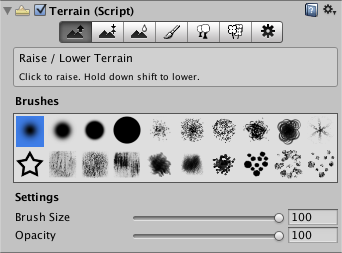

Creating and editing Terrains
To add a Terrain GameObject to your Scene, select GameObject > 3D Object > Terrain from the menu. This also adds a corresponding Terrain Asset to the Project view. When you do this, the landscape is initially a large, flat plane. The Terrain's Inspector window provides a number of tools you can use to create detailed landscape features.

With the exception of the tree placement tool and the settings panel, all the tools on the toolbar provide a set of "brushes" and settings for brush size and opacity. It is no coincidence that these resemble the painting tools from an image editor because detail in the terrain is created precisely that way, by "painting" detail onto the landscape. If you select the leftmost tool on the bar (Raise/Lower Terrain) and move the mouse over the terrain in the scene view, you will see a cursor resembling a spotlight on the surface. When you click the mouse, you can paint gradual changes in height onto the landscape at the mouse's position. By selecting different options from the Brushes toolbar, you can paint with different shapes. The Brush Size and Opacity options vary the area of the brush and the strength of its effect respectively.
The details of all of the tools will be given in subsequent sections. However, all of them are based around the concept of painting detail and with the exception of the tree placement tool, all have the same options for brushes, brush size and opacity. The tools can be used to set the height of the terrain and also to add coloration, plants and other objects.
Terrain Keyboard Shortcuts
You can use the following keyboard shortcuts in the terrain inspector:
- Press the keys from F1 to F6 to select the corresponding terrain tool (for example, F1 selects the Raise/Lower tool).
- The comma (,) and period (.) keys cycle through the available brushes.
- Shift-comma (<) and Shift-dot (>) cycle through the available objects for trees, Textures and details.
Additionally, the standard F keystroke works slightly differently for terrains. Normally, it frames the selection around the whole object when the mouse is over the scene view. However, since terrains are typically very large, pressing F will focus the scene view on the area of terrain where the mouse/brush is currently hovering. This provides a very quick and intuitive way to jump to the area of terrain you want to edit. If you press F when the mouse is away from the terrain object, the standard framing behaviour will return.